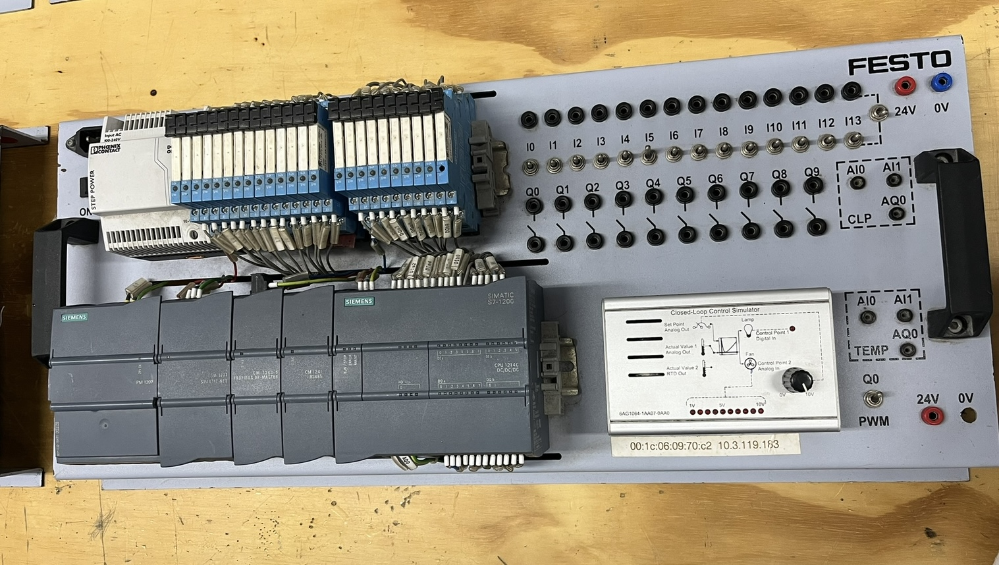

Práticas Laboratoriais
Laboratório de Elétrica
Partida Direta - Diagrama de Comando e Força
Durante a atividade no laboratório do SENAI, colocamos em prática os conhecimentos adquiridos em sala de aula, realizando a montagem e a aplicação de um circuito de comando e força em um painel elétrico.
Laboratório de Automação
Bancada Didática de Automação Industrial
A bancada didática de automação industrial é utilizada para estudar e praticar sistemas de automação. Ela possui uma fonte de alimentação, relés, um CLP Siemens S7-1200, módulos de entrada e saída e pontos de conexão. Os relés auxiliam no acionamento e na comunicação entre o CLP e outros componentes. As entradas digitais vão de I0 a I13 e recebem sinais, enquanto as saídas digitais vão de Q0 a Q9 e enviam comandos para outros componentes. Também possui conexões de 24 V e 0 V, entradas e saídas analógicas e uma área para PWM. O simulador permite realizar testes e observar o funcionamento dos circuitos. Assim, a bancada ajuda a montar, testar e entender melhor o funcionamento do CLP e dos componentes de automação.

Informações do CLP
Nesta imagem, temos um CLP (Controlador Lógico Programável) Siemens SIMATIC S7-1200. Identificar corretamente a família e o modelo do CLP é um passo muito importante antes de realizar sua configuração, pois cada família possui características, recursos e formas de programação específicas. Neste caso, trata-se da CPU 1214C, essa identificação permite selecionar o equipamento correto no software de programação e garantir que a configuração seja compatível com o CLP utilizado.

CLP
O CLP (Controlador Lógico Programável) é um equipamento usado na automação industrial para controlar máquinas e processos de forma automática. Ele recebe informações de sensores, processa os dados conforme sua programação e aciona equipamentos como motores, válvulas e cilindros.

Terminais da Fonte de Alimentação
Essa é uma fonte de alimentação que recebe 120/230 V em corrente alternada (AC) e transforma em 24 V em corrente contínua (DC) para alimentar os componentes do circuito. Na entrada, estão os terminais L1, N e PE, correspondentes à fase, ao neutro e ao terra de proteção. Na saída, estão os terminais L+ e M, que fornecem, respectivamente, +24 V e 0 V DC para o circuito.

Entradas Digitais, Analógicas e Terminais do CLP
Nesta imagem, podemos identificar as entradas do CLP, responsáveis por receber sinais de sensores e outros dispositivos. As entradas digitais são identificadas como DI a e DI b e trabalham com sinais de 24 VDC. Os terminais L+ e M representam a alimentação do circuito: o L+ corresponde ao positivo de 24 VDC e o M corresponde ao 0 V (referência). As setas presentes no equipamento indicam o sentido dos sinais, sendo a seta para baixo relacionada à entrada de sinais no CLP e a seta para cima relacionada à saída de sinais. Também podemos observar as entradas analógicas (AI), utilizadas para receber sinais variáveis, como 0–10 V ou 0–20 mA.

Saídas Digitais do CLP
Nesta imagem, podemos identificar as saídas digitais do CLP, responsáveis por enviar sinais de comando para os dispositivos do sistema, como relés, lâmpadas, válvulas e outros atuadores. As saídas estão organizadas em grupos, identificados como DQ a e DQ b, com canais numerados de 0 a 7. O equipamento trabalha com saídas de 24 V DC. Cada canal pode ser acionado individualmente pelo programa do CLP, permitindo controlar diferentes dispositivos de acordo com a lógica programada.

Relé Eletromecânico
Aqui vemos um relé eletromecânico Finder, utilizado em sistemas de automação e comandos elétricos. O componente possui uma bobina de 12 V em corrente contínua (DC) e contatos capazes de controlar cargas de até 6 A em 250 V AC. Sua principal função é permitir que um circuito de baixa tensão controle outro circuito de maior potência.

Informações do Relé
Nesta imagem, podemos identificar a numeração e a função de cada pino do relé, informação importante para realizar a ligação corretamente. A própria identificação no componente mostra quais terminais correspondem à bobina e quais são os contatos de saída. Os pinos A1 e A2 são responsáveis pela alimentação da bobina. Já nos contatos, o 11 é o COM (comum), o 12 é o NF (normalmente fechado) e o 14 é o NA (normalmente aberto). Dessa forma, é possível saber exatamente qual pino é cada função do relé antes de fazer sua ligação.

Sensor Capacitivo
É um dispositivo eletrônico utilizado para detectar a presença ou aproximação de objetos, por meio da variação da capacitância de um campo elétrico gerado pelo próprio sensor. Ele pode detectar materiais metálicos e não metálicos, como plástico, madeira, vidro, líquidos e até o corpo humano.

Sensor Indutivo
É um dispositivo eletrônico utilizado para detectar a presença ou aproximação de objetos metálicos, sem necessidade de contato físico. Ele funciona por meio de um campo eletromagnético gerado por uma bobina. Quando um objeto metálico se aproxima, ocorre uma alteração nesse campo, que é identificada pelo circuito do sensor.